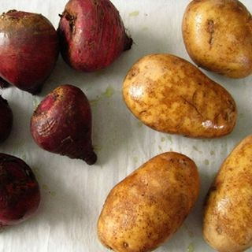
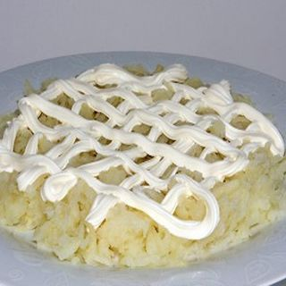
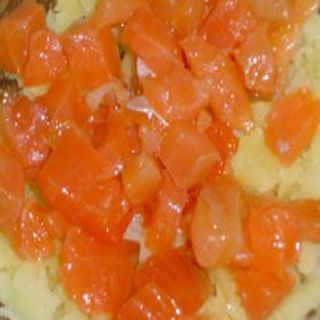
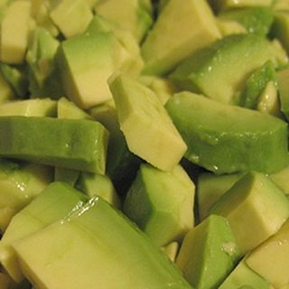
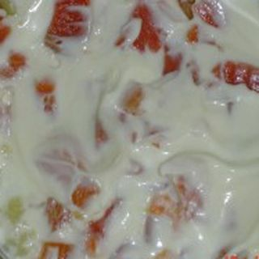
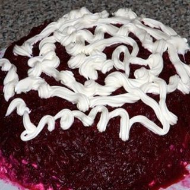
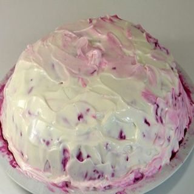
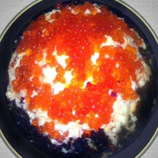

Шаг 1: подготавливаем ингредиенты.

Отваренный картофель и свеклу отчистите от кожуры ножом и натрите на крупной терке в отдельные глубокие тарелки. Кусочек малосольного лосося, промойте под проточной водой, обсушите бумажными кухонными полотенцами, снимите ножом кожу, уложите на разделочную доску и нарежьте кубиками 1 на 1 сантиметр или нарежьте небольшими произвольными по размеру пластами толщиной до 5 миллиметров. Отчищенный авокадо нарежьте кубиками не более чем 1 на 1 сантиметр, можно мельче, уложите в глубокую миску и полейте соком 1 лимона, просто выжмите рукой цитрусовый прямо на авокадо.
Крабовое мясо нарежьте полосками или пластам среднего размера с примерной толщиной до 5 миллиметров и уложите на тарелку. В глубокой миске смешайте майонез и сметану с помощью столовой ложки. Откройте банку с красной икрой с помощью ключа для консервов. Ингредиенты подготовлены, можно приступать к приготовлению салата.
Шаг 2: укладываем слоями салат.

Теперь возьмите большое плоское круглое блюдо, или любое другое на ваше усмотрение и уложите салат слоями. Первый слой, натертый картофель. Уложите его на дно блюда, по вкусу посолите, и нанесите на его поверхность слой соуса из майонеза и сметаны с помощью столовой ложки.

Второй слой - малосольный лосось смазанный соусом.

Тритий слой - авокадо маринованное в лимонном соке. Смазывать соусом этот слой не надо.

Четвертый слой - имитация крабового мяса, смазанная соусом.

Пятый слой - натертая свекла и сверху слой соуса.

Нанесите соус равномерно так, чтобы не было видно бордовых пятен свеклы.

Шестой и последний слой красная и черная икра. Красная икра сверху, черная по краям. Готовый салат поставьте в холодильник и дайте настояться и пропитаться 2 – 3 часа.